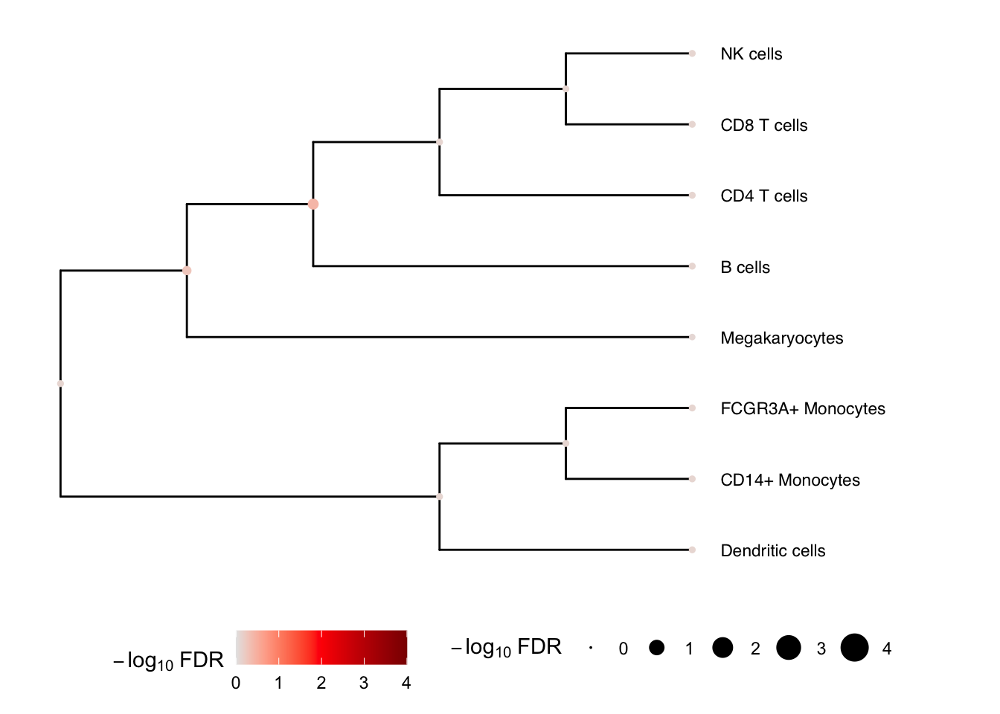

Multivariate testing along a tree
Developed by Gabriel Hoffman
Run on 2022-12-07 20:21:55
Source:vignettes/crumblr_treeTest.Rmd
crumblr_treeTest.RmdLoad and process single cell data
Here we perform analysis of PBMCs from 8 individuals stimulated with
interferon-β Kang, et
al, 2018, Nature Biotech. We perform standard processing with dreamlet
to compute pseudobulk before applying crumblr.
library(dreamlet)
library(muscat)
library(ExperimentHub)
library(scater)
# Download data, specifying EH2259 for the Kang, et al study
eh <- ExperimentHub()
sce <- eh[["EH2259"]]
# only keep singlet cells with sufficient reads
sce <- sce[rowSums(counts(sce) > 0) > 0, ]
sce <- sce[,colData(sce)$multiplets == 'singlet']
# compute QC metrics
qc <- perCellQCMetrics(sce)
# remove cells with few or many detected genes
ol <- isOutlier(metric = qc$detected, nmads = 2, log = TRUE)
sce <- sce[, !ol]
# set variable indicating stimulated (stim) or control (ctrl)
sce$StimStatus = sce$stim
# Since 'ind' is the individual and 'StimStatus' is the stimulus status,
# create unique identifier for each sample
sce$id <- paste0(sce$StimStatus, sce$ind)
# Create pseudobulk data by specifying cluster_id and sample_id
# Count data for each cell type is then stored in the `assay` field
# assay: entry in assayNames(sce) storing raw counts
# cluster_id: variable in colData(sce) indicating cell clusters
# sample_id: variable in colData(sce) indicating sample id for aggregating cells
pb <- aggregateToPseudoBulk(sce,
assay = "counts",
cluster_id = "cell",
sample_id = "id",
verbose = FALSE)Standard crumblr analysis
Apply standard crumblr analysis to transform data and
apply a linear (mixed) model, followed by empirical Bayes moderated
statistics.
library(crumblr)
# crumblr transformation using
# cellCounts() to extract counts from pseudobulk
cobj = crumblr(cellCounts(pb))
# Use dream workflow to analyze each cell separately
fit = dream(cobj, ~ StimStatus + ind, colData(pb))
fit = eBayes(fit)
# extract top results
topTable(fit, coef="StimStatusstim") ## logFC AveExpr t P.Value adj.P.Val B
## Dendritic cells 0.32516900 -2.1849234 1.0895217 0.2923251 0.823424 -4.590653
## CD14+ Monocytes -0.12437220 1.2698117 -0.9560159 0.3535191 0.823424 -4.685558
## B cells -0.09825871 0.5516882 -0.6779201 0.5076669 0.823424 -4.746255
## NK cells 0.08494553 0.3797777 0.5814645 0.5691622 0.823424 -4.753355
## CD4 T cells -0.07763160 2.0201947 -0.4732415 0.6425378 0.823424 -4.900413
## CD8 T cells -0.16431725 0.0857175 -0.3892080 0.7023377 0.823424 -4.758201
## FCGR3A+ Monocytes 0.06580754 -0.2567492 0.3460969 0.7338531 0.823424 -4.734622
## Megakaryocytes 0.04681137 -1.8655172 0.2268978 0.8234240 0.823424 -4.635391Multivariate testing along a tree
We can gain power by jointly testing multiple cell types using a
multivariate statistical model, instead of testing one cell type at a
time. Here we construct a hierarchical clustering between cell types
based on gene expression from pseudobulk, and perform a multivariate
test for each internal node of the tree based on its leaf nodes. The
results for the leaves are the same as from topTable()
above. At each internal node treeTest() performs a fixed
effects meta-analysis of the coefficients of the leaves while modeling
the covariance between coefficient estimates. In the backend, this is
implemented using variancePartition::mvTest() and remaCor
package.
# Hierarchical clustering of cell types
# The tree is based on similarity between cell types
# based on gene expression
hcl = buildClusterTreeFromPB(pb)
# Perform multivariate test across the hierarchy
# Specify coefficient to test
res = treeTest( fit, cobj, hcl, coef="StimStatusstim")
# Plot hierarchy and testing results
# Adjust xlim() until text fits in window
plotTreeTest(res) + xlim(0, 7)
In this example, no result passes the multiple testing cutoff.